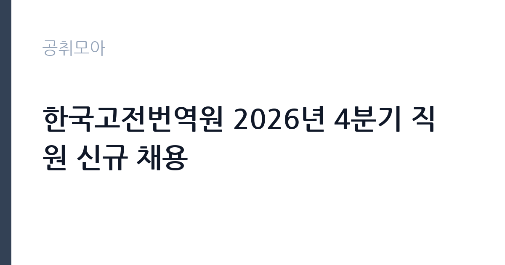

[공공기관] 한국고전번역원 2026년 4분기 직원 신규 채용
한국고전번역원 · 서울 · 마감 2026-10-26 (D-14) · 출처 잡알리오

한눈에 보는 모집 조건
| 기관 | 한국고전번역원 |
|---|---|
| 공고명 | 한국고전번역원 2026년 4분기 직원 신규 채용 |
| 고용형태 | 정규직 |
| 근무지 | 서울 |
| 게시일 | 2026-10-12 |
| 마감일 | 2026-10-26 (D-14) |
지원자격, 이렇게 읽으세요
- 공공기관 채용공시
- 세부 조건은 원문 공고문 확인
공통 요건은 국가공무원법 제33조 각 호와 한국고전번역원 인사규정 제6조의 결격사유에 해당하지 않아야 하며, 모집 분야 업무 수행이 가능하고 채용 확정 후 즉시 근무가 가능해야 한다는 점입니다. 또한 인사규정 제19조의 정년에 도달하지 않은 분만 지원하실 수 있습니다. 분야별 요건을 살펴보면 일반행정은 경영과 회계, 사무 분야 직무 수행 능력을 필수 조건으로 하며, 공공기관 및 유관기관 행정업무 유경험자를 우대합니다. 감사업무 역시 직무 수행 능력을 필수로 하며, 공공기관 및 유관기관에서 감사업무를 2년 이상 수행한 경력자를 우대합니다. 지원자격에서 주의하실 점은 필수 조건의 문구가 포괄적이라는 사실입니다. 해당 직무를 수행할 수 있다고 인정되는 자라는 표현은 서류 심사에서 직무 연관 경험을 폭넓게 평가하겠다는 의미이므로, 행정과 회계, 사무, 감사 관련 경력과 자격, 교육 이수 내역을 빠짐없이 정리하시는 것이 좋습니다. 특히 감사 분야는 2년 이상 경력 우대 조건이 사실상 당락을 가르는 요소이므로, 경력증명서에 감사 직무 수행 내용이 명확히 드러나도록 준비하시기 바랍니다.
이 공고의 포인트
해당 공고의 첫 번째 포인트는 소규모 교육문화 분야 공공기관의 정규직 채용이라는 점입니다. 한국고전번역원은 직원이 100명 안팎인 작은 기관으로, 이러한 기관의 행정직은 채용 빈도가 낮아 공고가 게시되면 지원자가 집중되는 경향이 있습니다. 두 번째 포인트는 학력무관 조건입니다. 학력 제한이 없다는 것은 고졸과 전문대졸 지원자도 동등하게 지원할 수 있다는 의미이며, 직무 능력과 경험을 중심으로 평가받을 수 있습니다. 세 번째 포인트는 감사 분야의 경력 우대입니다. 공공기관 감사 경력 2년 이상이라는 조건은 해당 경력을 보유한 분들께 경쟁자가 대폭 줄어드는 유리한 기회가 됩니다. 반대로 일반행정 분야는 우대 조건의 문턱이 낮아 지원자가 몰릴 수 있으니, 공공기관 행정 유경험 여부를 꼼꼼히 어필하시는 전략이 필요합니다.
전형은 어떻게 진행되나
전형 절차와 세부 일정은 원문 공고문에서 확인하시기 바랍니다. 일반적으로 공공기관 채용은 서류전형과 필기전형, 면접전형의 순서로 진행되며, 국가직무능력표준 기반 직업기초능력 평가와 직무수행능력 평가가 포함되는 경우가 많습니다. 이번 채용의 표준직무는 경영과 회계, 사무로 분류되어 있으므로, 필기전형이 시행된다면 사무행정 관련 모듈을 중심으로 출제될 가능성이 큽니다. 서류전형에서는 입사지원서에 기재한 직무 연관 경험과 자격을 검증하므로, 증빙 서류를 미리 준비해 두시는 것이 좋습니다. 면접전형에서는 기관 이해도와 직무 전문성, 조직 적합성을 종합적으로 평가합니다. 접수 마감일이 2026년 10월 26일이므로, 지원서 작성과 증빙 준비에 남은 기간을 효율적으로 활용하시기 바랍니다.
원문에서 확인한 전형 방식
■ 공통요건 - 국가공무원법 제33조 각 호에 해당하지 않는 자 - 한국고전번역원 인사규정 제6조(결격사유) 각 호에 해당하지 않는 자 - 모집분야 해당 업무 수행 가능자 - 채용확정 후 즉시 근무 가능자 - 한국고전번역원 인사규정 제19조(정년)에 도달하지 않은 자 ■ 채용분야별 지원자격요건 가. 행정직(정규직)-일반행정(경영·회계·사무 등) <필수조건> - 해당직무를 수행할 수 있다고 인정되는 자 <우대조건> - 공공기관 및 유관기관 행정업무 유경험자 나. 행정직(정규직)-감사업무 <필수조건> - 해당직무를 수행할 수 있다고 인정되는 자 <우대조건> - 공공기관 및 유관기관 감사업무 2년 이상 ※ 상세 내용은 공고문 참조
이런 분께 추천해요
- 공공기관 행정과 사무, 회계 업무 경험이 있어 정규직으로 안착하고 싶은 분께 추천합니다.
- 공공기관 감사 업무를 2년 이상 수행한 경력이 있어 경쟁 우위를 살리고 싶은 분께 추천합니다.
- 고전과 전통문화, 인문 분야에 관심이 있고 소규모 공공기관의 안정적인 근무 환경을 선호하는 분께 추천합니다.
지원 전 체크리스트
- 결격사유 자가진단 항목입니다. 국가공무원법 제33조와 기관 인사규정 제6조 해당 여부를 먼저 확인하시기 바랍니다.
- 즉시 근무 가능 여부입니다. 채용 확정 후 바로 출근할 수 있는 상태인지 점검하시기 바랍니다.
- 경력증명서 정비 항목입니다. 행정과 감사 직무 수행 내용이 증명서에 구체적으로 기재되어 있는지 확인하시기 바랍니다.
- 마감일 제출 시점입니다. 마감 당일 접속 폭주를 고려해 최소 하루 전 제출을 권장합니다.
모집 일정과 제출 타이밍
공고 게시일은 2026년 10월 12일이며 접수 마감일은 2026년 10월 26일입니다. 접수 기간이 약 2주로 비교적 여유가 있으나, 지원서와 증빙 서류를 준비하는 데 시간이 소요되므로 초반에 착수하시는 것이 좋습니다. 채용 확정 후 즉시 근무가 조건이므로 현재 재직 중인 분은 퇴사 일정과 임용 일정의 정합성을 미리 따져보시기 바랍니다. 이후 전형 일정은 원문 공고문과 기관 채용 게시판의 안내를 수시로 확인하시기 바랍니다.
직무 이해하기: 공공기관
행정직의 실무를 이해하면 지원서 작성이 수월해집니다. 일반행정은 기관의 예산 편성과 집행, 회계 결산, 인사와 복무 관리, 총무와 계약 업무를 맡습니다. 소규모 공공기관에서는 한 사람이 여러 영역을 함께 담당하는 경우가 많아 폭넓은 대응 역량이 중요합니다. 감사업무는 기관의 회계와 업무 전반에 대한 감사와 청렴 경영, 내부통제 점검을 담당합니다. 공공기관 감사는 외부 감사 대응과 자체 감사 계획 수립, 지적 사항 후속 관리까지 이어지는 순환 업무입니다. 두 분야 모두 공공기관 특유의 규정과 지침을 다루므로, 공공기관 경영공시와 감사 관련 법령에 대한 기본 이해가 실무 적응에 도움이 됩니다.
자기소개서 작성 팁
자기소개서는 직무 연관 경험을 구체적인 수치와 결과로 풀어내는 것이 핵심입니다. 일반행정 지원자는 예산과 회계, 총무, 계약 중 본인이 담당했던 영역을 특정하고, 처리 규모와 개선 성과를 적시하시기 바랍니다. 계약 건수와 예산 규모, 업무 처리 기간 단축 사례처럼 측정 가능한 내용이 설득력을 높입니다. 감사 지원자는 수행한 감사 유형과 지적 개선 실적을 중심으로 서술하시기 바랍니다. 기관 이해 항목에서는 고전 번역과 보급이라는 기관 고유 임무에 대한 관심을 진정성 있게 연결하시기 바랍니다. 단순한 찬사가 아니라 행정 담당자로서 기관 임무를 어떻게 뒷받침할 수 있는지 서술하는 것이 좋습니다. 인사규정상 즉시 근무 가능 조건을 감안해 입사 후 적응 계획을 간결하게 제시하시기 바랍니다.
면접 준비 포인트
면접에서는 직무 전문성과 조직 적합성이 핵심 평가 요소입니다. 일반행정 분야는 경영과 회계, 사무 실무 지식을 묻는 질문에 대비하시기 바랍니다. 예산 집행 절차와 계약 방식, 회계 처리 원칙 같은 기본기를 묻는 경우가 많습니다. 감사 분야는 감사 착안 사항 도출 방식과 감사인의 독립성, 윤리 의식을 묻는 질문이 나올 수 있습니다. 실제 감사 사례를 묻는다면 기밀을 지키는 선에서 절차와 원칙 중심으로 답변하시기 바랍니다. 공통적으로는 소규모 기관 특유의 협업 방식에 대한 질문이 나올 수 있으니, 폭넓은 업무를 담당했던 경험을 준비하시기 바랍니다. 기관의 주요 사업인 고전 번역과 보급 사업에 대한 기본 이해를 보여주시면 좋은 인상을 남길 수 있습니다.
급여·근무조건 읽는 법
급여 수준은 알리오 경영공시 확정값으로 확인할 수 있습니다. 2025년 기준 한국고전번역원 신입사원 초봉은 4,024만원이며, 일반정규직 1인당 평균 연봉은 6,718만원입니다. 평균 근속연수는 12.6년이며 직원 수는 95명 규모입니다. 위 수치는 기본급과 수당, 상여를 포함한 평균보수 개념이며, 개인의 호봉과 직급에 따라 실제 수령액은 달라집니다. 기본급과 수당, 상여의 세부 구성과 이번 채용 분야의 초임 호봉 획정 기준은 원문 공고문과 기관 보수 규정을 통해 확인하시기 바랍니다. 출처는 알리오 공공기관 경영정보 공개시스템의 2025년 확정 공시입니다.
자주 묻는 질문
- 행정직 2개 분야에 중복 지원이 가능합니까?
원문 공고문의 중복 지원 허용 여부를 확인하시기 바랍니다. 일반적으로 공공기관 채용은 1개 분야만 지원 가능한 경우가 많습니다. - 학력무관 조건에서 고졸 지원자도 불이익이 없습니까?
학력이 평가 요소가 아니므로 직무 능력과 경험 중심으로 평가받습니다. 다만 우대 조건 충족 여부가 실질적인 경쟁력이 됩니다. - 채용 확정 후 즉시 근무가 어려우면 어떻게 됩니까?
공고상 필수 조건이므로 임용 일정과 개인 일정을 사전에 조율하시고, 우려되는 점은 접수 전 기관 인사 담당 부서에 문의하시기 바랍니다.
함께 보면 좋은 공고
[공공기관] 대한법률구조공단 원주출장소 청년인턴 공개경쟁 채용시험 공고 — 마감 2026-10-27[공공기관] 2026년 학산공원국민체육센터 GX 프로그램 강사(명상) 위촉공고 — 마감 2026-10-15[공공기관] 2026년 제3차 재단법인 남원시바이오산업연구원 정규직(일반직/행정직) 채용 공고 — 마감 2026-10-27출처: 잡알리오 공개정보를 바탕으로 공취모아가 정리한 안내글입니다. 모집 조건·일정은 변경될 수 있으니 지원 전 반드시 원문 공고문을 확인하세요. 본 글은 정보 제공용이며 합격을 보장하지 않습니다.